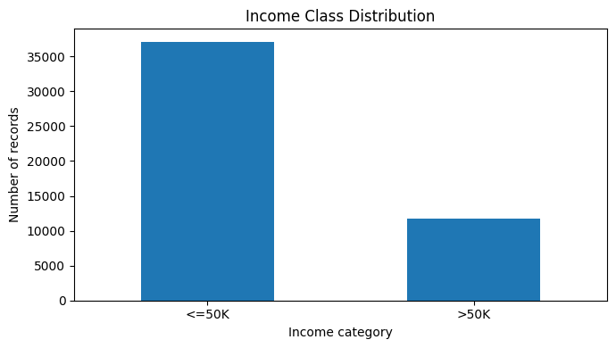
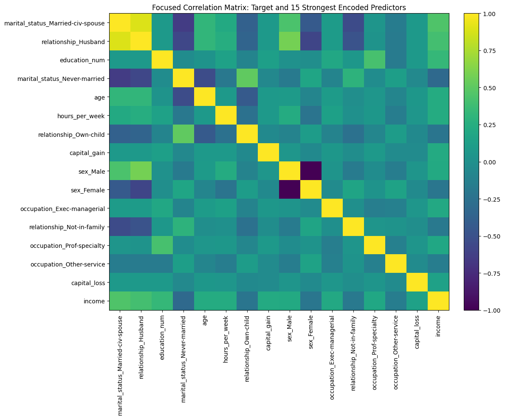
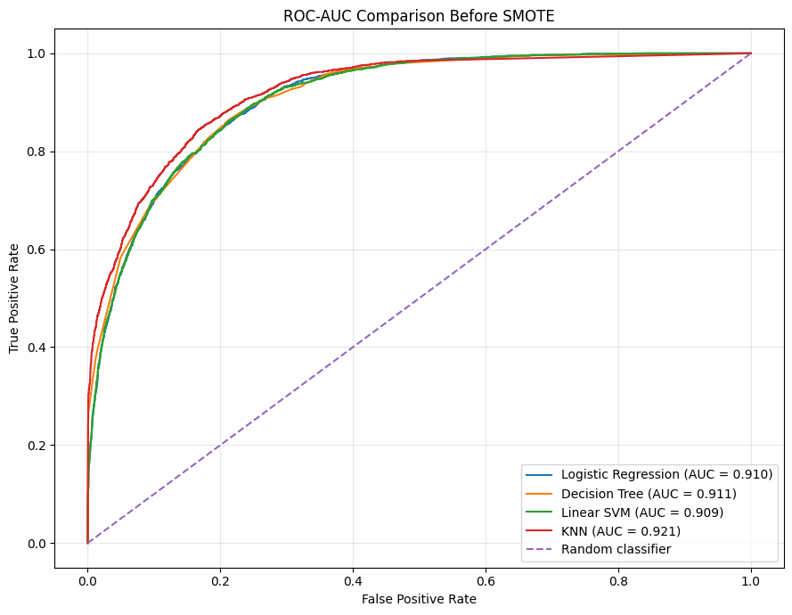
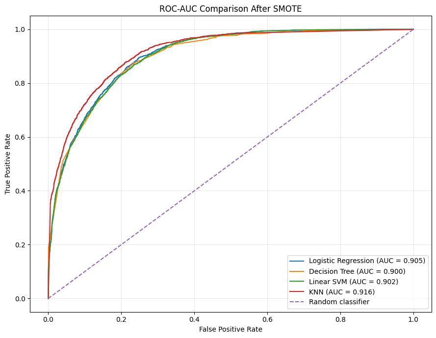

PROJECT 04
Adult Income Classification
A binary classification project comparing multiple machine learning algorithms to predict whether an individual's annual income exceeds $50,000.
OVERVIEW
Project Overview
The objective of this project was to predict whether an adult earns more than $50,000 per year using demographic, educational, employment, relationship, and financial information.
Four classification algorithms were evaluated before and after addressing class imbalance with SMOTE.
DATA
Dataset
The Adult Income dataset contains demographic and employment information used to classify individuals into two income categories.
Original Records
48,842
ObservationsClean Records
48,790
After DuplicatesLower Income
76.06%
≤ $50KHigher Income
23.94%
> $50KMETHODOLOGY
Data Preprocessing
The preprocessing workflow included duplicate removal, missing-value handling, categorical encoding, robust feature scaling, and a stratified train-test split.
Preprocessing transformations were fitted only on training data to prevent data leakage.
MODELS
Classification Models
Four machine learning algorithms were trained and compared using the same test data and evaluation metrics.
RESULTS
Performance Before SMOTE
KNN produced the strongest overall discrimination before balancing the training data, achieving the highest ROC-AUC among the four models.
KNN Accuracy
86.82%
Before SMOTEKNN ROC-AUC
0.921
Best ModelHigher-Income Recall
65.92%
> $50KHigher-Income F1
70.55%
KNNCLASS IMBALANCE
Applying SMOTE
The target variable was imbalanced, with approximately three quarters of observations belonging to the lower-income class.
SMOTE was applied only to the processed training set. The minority class was synthetically increased until both classes contained 29,687 training observations.
The training set contained 29,687 lower-income observations and 9,345 higher-income observations.
Both classes contained 29,687 training observations, creating a balanced training dataset.
RESULTS AFTER SMOTE
The Recall Trade-Off
SMOTE substantially improved the model's ability to identify higher-income observations, but this came with lower overall accuracy and precision.
KNN Accuracy
81.98%
After SMOTEKNN ROC-AUC
0.916
After SMOTEHigher-Income Recall
84.89%
After SMOTERecall Improvement
+18.96
Percentage PointsVISUALIZATIONS
Model Analysis

Class Imbalance
Approximately 76% of observations belong to the lower-income class and 24% to the higher-income class.

Feature Relationships
Education and relationship-related variables showed some of the strongest linear relationships with the income target.

ROC-AUC Before SMOTE
KNN achieved the strongest ROC-AUC before balancing the training data.

ROC-AUC After SMOTE
KNN remained the strongest model by ROC-AUC after applying SMOTE.
KEY FINDINGS
What the Results Show
KNN produced a ROC-AUC of 0.9213 before SMOTE and 0.9161 after SMOTE.
KNN recall for adults earning more than $50K increased from 65.92% to 84.89%.
After SMOTE, KNN accuracy decreased from 86.82% to 81.98%, illustrating the trade-off between sensitivity and overall accuracy.
KNN without SMOTE is preferable when overall discrimination and accuracy matter most, while KNN with SMOTE is preferable when identifying more higher-income observations is the priority.
TOOLS
Technologies Used
KEY TAKEAWAYS
What I Learned
High overall accuracy does not necessarily mean that the minority class is being identified effectively.
Balancing training data increased minority recall, but also increased false-positive predictions.
Comparing ROC-AUC helped evaluate model discrimination independently of one fixed classification threshold.
PROJECT RESOURCES
Explore the Full Project
Review the complete notebook for data cleaning, preprocessing, model comparison, SMOTE implementation, and evaluation.